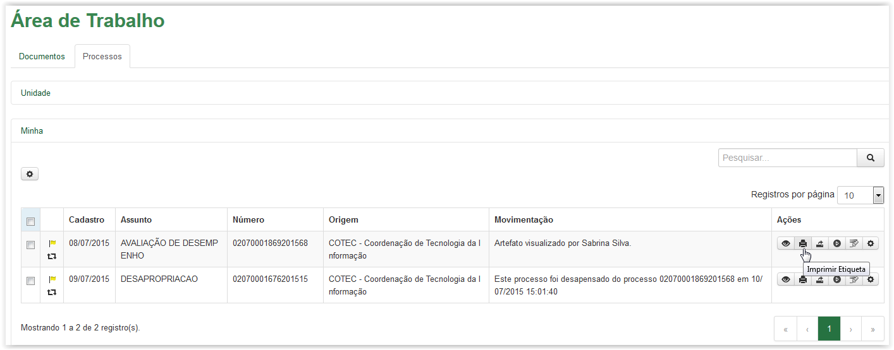

Imprimir etiqueta de processo
Para imprimir a etiqueta de um processo, clique no ícone disponível na coluna Ações da Área de Trabalho:

Aba Processos - Ícone Imprimir Etiqueta
Após clicar no ícone a Etiqueta do Processo, em formato “PDF”, é apresentada:
Etiqueta do Processo
Utilize o ícone para fazer a impressão da etiqueta.
Created with the Personal Edition of HelpNDoc: Free help authoring environment